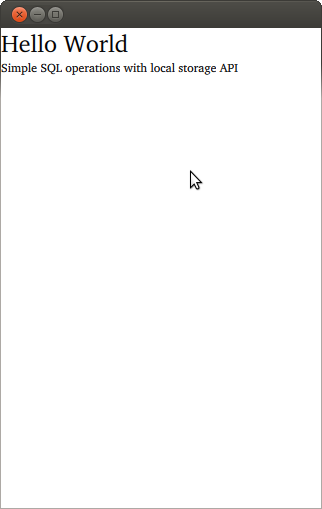

QtQuick Examples - Local Storage
A collection of QML local storage examples.

This is a collection of small QML examples relating to local storage functionality.
Hello World demonstrates creating a simple SQL table and doing insert/select operations.
Files: